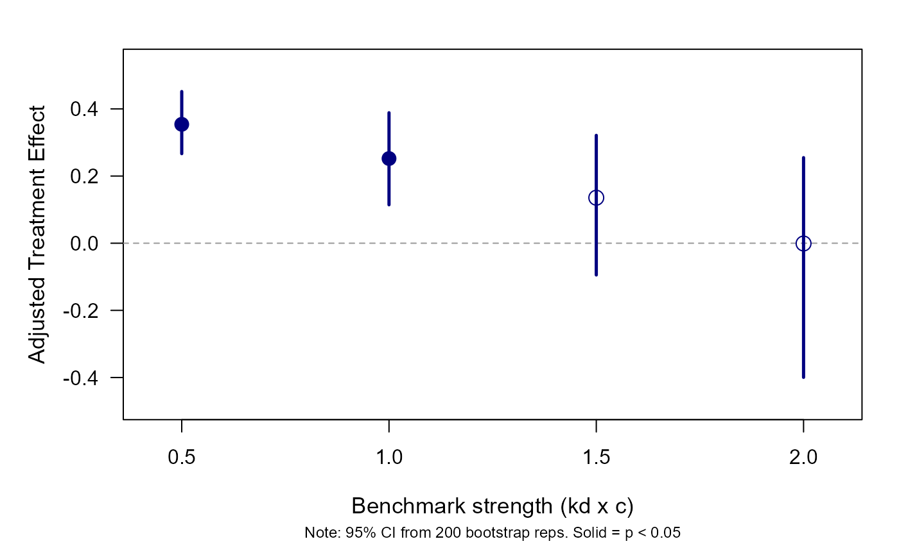

Wraps sensemakr (Cinelli & Hazlett, 2020) in a
bootstrap loop. For an omitted variable kd times as strong as an
observed benchmark covariate, bootmakr() computes the bias-adjusted
estimate of the treatment coefficient and obtains its standard error,
confidence interval and p-value by simple, stratified or cluster bootstrap,
so that inference does not rest on the conventional OLS variance formula.
Usage
bootmakr(
formula,
data,
treat,
benchmark_covariates = NULL,
gbenchmark_covariates = NULL,
kd = 1,
ky = NULL,
q = 1,
alpha = 0.05,
r2dz.x = NULL,
r2yz.dx = NULL,
bound_label = NULL,
reduce = TRUE,
bounds_row = 1,
reps = 1000,
seed = NULL,
cluster = NULL,
strata = NULL,
weights = NULL,
progress = TRUE,
dots = 0,
converge = FALSE,
verbose = FALSE
)Arguments
- formula
A formula for the OLS regression: outcome on the left, treatment and covariates on the right.
- data
A data frame.
- treat
Character: name of the treatment variable (the coefficient whose sensitivity is assessed).
- benchmark_covariates
Character vector: observed covariate(s) used as benchmark for the strength of the omitted variable. If several are supplied, the adjusted estimates refer to the first one.
- gbenchmark_covariates
Character vector: a group of covariates used jointly as benchmark. Uses
group_partial_r2to compute joint R2 values.- kd, ky
Numeric vectors of benchmark multipliers: the omitted variable is assumed
kdtimes as strong as the benchmark in explaining the treatment andkytimes as strong in explaining the outcome.kddefaults to 1 (exactly as strong as the benchmark) andkytokd. A vector of several values gives one row of results per value (a "kd sweep").- q, alpha
Numeric: proportion of the effect to be explained away (passed to sensemakr) and significance level of the bootstrap confidence interval (default 0.05).
- r2dz.x, r2yz.dx
Optional manual partial R2 values of the omitted variable with the treatment and with the outcome (instead of a benchmark).
- bound_label
Character label for bounds table.
- reduce
Logical: should the omitted variable reduce the absolute value of the estimate (default
TRUE)?- bounds_row
Integer: which row of sensemakr's bounds table to use when a single
kdis supplied (default 1).- reps
Integer: bootstrap replications (default 1000).
- seed
Integer or
NULL. No seed is set unless one is supplied, so results vary from run to run without it.- cluster
Column name(s) or vector for the cluster bootstrap. Length 1 (e.g.
"firm") gives a one-way cluster bootstrap with percentile CIs. Length 2 (e.g.c("firm", "year")) triggers a two-way cluster bootstrap using the Cameron, Gelbach & Miller (2011) subtractive variance estimator: three bootstraps are run (on each dimension and on their intersection) and combined asV = V_G + V_H - V_(G n H). CIs and p-values for the two-way case use a normal approximationestimate +/- z * SE. Two-way clustering is incompatible withstrata.- strata, weights
Column name or vector: strata for a stratified bootstrap, and regression weights.
- progress
Logical: show a progress bar (default TRUE).
- dots
Deprecated; use
progressinstead.- converge
TRUE,FALSE, orlist(minreps, stepsize, threshold): an informal convergence check that recomputes the standard error and p-value on the firstminreps,minreps + stepsize, ... replications and summarises how much they still move, overall and fromthresholdreplications onwards.- verbose
Logical; currently unused.
Value
An object of class "bootmakr", a list with (among others)
resultsdata frame with one row per
kd: adjustedestimate, bootstrapse,ci_lower,ci_upper,pvalue, the implied strength of the omitted variable (r2dz.x,r2yz.dx) the row is based on, and itsimpact.benchmark_strengthlist with
$observed(partial R2 of the benchmark with treatment and outcome, and their square roots),$implied(sensemakr's bound on the omitted variable at eachkd/ky:r2dz.x,r2yz.dx, their square rootsr_dz.x,r_yz.dx, the partial correlation with the outcome given the covariates only,r_yz.x, and theimpact,r_yz.x * r_dz.x) and$r_yd.x(the partial correlation of the outcome with the treatment given the covariates, used in that recursion).boot_samplesmatrix of bootstrap draws of the adjusted estimate, one column per
kd(a list of three such matrices with two-way clustering).convergenceconvergence diagnostics, if requested.
N,N_reps,N_successful,N_fail,N_clustsample size, replications requested, completed and failed, and number of clusters.
sensemakr_origthe
sensemakrobject of the original fit.
Use print() for the results table and plot() for the
kd-sweep, convergence and histogram plots.
Details
In every replication the data are resampled (rows, whole clusters, or within strata), the regression is refitted, and the benchmark bounds and the bias-adjusted estimate are recomputed. The bootstrap distribution therefore reflects sampling uncertainty in the regression coefficient and in the estimated strength of the benchmark. The standard error is the standard deviation of that distribution, the confidence interval its percentile interval, and the p-value is twice the smaller of the shares of replications at or below zero and at or above zero.
With a length-two cluster, three bootstraps are combined with the
Cameron, Gelbach & Miller (2011) subtractive variance estimator, and the
confidence interval and p-value use a normal approximation.
Below the table of adjusted estimates, the print method reports the
benchmark strength: the partial R2 of the benchmark with the
treatment (given the other covariates) and with the outcome (given the
treatment and the covariates), and sensemakr's implied bound on the
omitted variable at each kd. For the omitted variable it also
reports its impact, the product of its partial correlations with
the outcome and with the treatment, both given the covariates only. This
is the scale on which the impact threshold of a confounding variable
(ITCV) is stated, so a reader used to the ITCV can judge how strong the
assumed omitted variable is. The partial correlation with the outcome
given the covariates is recovered from sensemakr's bound (which conditions
on the treatment as well) with the recursion formula for partial
correlations, with the signs set so that the omitted variable biases the
estimate away from zero (towards zero when reduce = FALSE). All of
these are functions of the data alone. No standard error enters them, so
they do not depend on the variance estimator, and none of them is a
threshold. They are stored in $benchmark_strength.
The bootstrap procedure follows Cinelli, Ferwerda and Hazlett (2024, Appendix C); Lonati and Wulff (2026) show why it is needed when the regression calls for robust standard errors.
References
Cameron, A. C., Gelbach, J. B., & Miller, D. L. (2011). Robust inference with multiway clustering. Journal of Business & Economic Statistics, 29(2), 238-249.
Cinelli, C., & Hazlett, C. (2020). Making sense of sensitivity: Extending omitted variable bias. Journal of the Royal Statistical Society: Series B, 82(1), 39-67.
Cinelli, C., Ferwerda, J., & Hazlett, C. (2024). sensemakr: Sensitivity analysis tools for OLS in R and Stata. Observational Studies, 10(2), 93-127.
Lonati, S., & Wulff, J. N. (2026). Why you should not use the ITCV with robust standard errors (and what to do instead). Academy of Management Proceedings, 2026(1). doi:10.5465/AMPROC.2026.247bp
Examples
# Simulated firm panel: the true effect of x on y is 0.25, and a firm-level
# variable q, omitted here, biases the regression of y on x and c (see
# ?firms). An omitted variable as strong as the observed control c (kd = 1,
# the default); firms are resampled as whole clusters. 200 replications
# keep the example quick; use 1,000 or more in practice.
data("firms", package = "bootmakr")
out <- bootmakr(y ~ x + c, data = firms, treat = "x",
benchmark_covariates = "c", cluster = "firm",
reps = 200, seed = 1, progress = FALSE)
out
#>
#> Call:
#> bootmakr(formula = y ~ x + c, data = firms, treat = "x", benchmark_covariates = "c",
#> reps = 200, seed = 1, cluster = "firm", progress = FALSE)
#>
#> Bootstrap sensitivity analysis (200 reps, n = 5,000, 250 clusters)
#> Benchmark: c | kd = 1, ky = 1
#>
#> Adjusted estimates (percentile 95% CI):
#> Estimate Std. Err 2.5% 97.5% Pr(>|0|)
#> x 0.252134 0.073892 0.114400 0.388515 0 ***
#> ---
#> Signif. codes: 0 '***' 0.001 '**' 0.01 '*' 0.05 '.' 0.1 ' ' 1
#> (H0: adjusted estimate = 0; CI and p-value from percentile bootstrap)
#>
#> Benchmark strength (descriptive: computed from the data, no standard errors involved)
#> Partial R2 |Partial r|
#> c with treatment | X 0.1433 0.379
#> c with outcome | D, X 0.1248 0.353
#> Implied strength of the omitted variable (sensemakr bounds):
#> kd ky R2dz.x R2yz.dx Impact
#> 1.00x c 1.00 1.00 0.1673 0.1998 0.222
#> (R2dz.x, R2yz.dx: partial R2 of the omitted variable with the treatment given the
#> covariates, and with the outcome given treatment and covariates. Impact: product of
#> its partial correlations with the outcome and with the treatment, both given the
#> covariates only, i.e. the scale of the ITCV; signed so that the omitted variable
#> biases the estimate away from zero. Descriptive only: independent of the variance
#> estimator, and not a threshold.)
# The strength of the benchmark and of the omitted variable it implies,
# with the impact of the latter on the scale of the ITCV
out$benchmark_strength
#> $type
#> [1] "single"
#>
#> $observed
#> benchmark r2dxj.x r2yxj.dx r_dxj.x r_yxj.dx
#> 1 c 0.1433067 0.1247742 0.3785587 0.3532339
#>
#> $implied
#> benchmark kd ky r2dz.x r2yz.dx r_dz.x r_yz.dx r_yz.x impact
#> 1 c 1 1 0.1672789 0.1998387 0.4089974 0.4470332 0.5420107 0.2216809
#>
#> $r_yd.x
#> [1] 0.4201003
#>
# Several strengths at once: where does the effect stop being significant?
sweep <- bootmakr(y ~ x + c, data = firms, treat = "x",
benchmark_covariates = "c", kd = c(0.5, 1, 1.5, 2),
cluster = "firm", reps = 200, seed = 1, progress = FALSE)
sweep$results
#> kd estimate se ci_lower ci_upper pvalue r2dz.x
#> 1 0.5 0.3540423072 0.04998579 0.26661604 0.4517006 0.00 0.08363943
#> 2 1.0 0.2521337284 0.07389179 0.11439960 0.3885147 0.00 0.16727885
#> 3 1.5 0.1354581053 0.11148630 -0.09457619 0.3211839 0.23 0.25091828
#> 4 2.0 -0.0009089434 0.17156882 -0.39944833 0.2548340 0.91 0.33455771
#> r2yz.dx impact
#> 1 0.09728672 0.1134982
#> 2 0.19983870 0.2216809
#> 3 0.30927622 0.3242071
#> 4 0.42800396 0.4206720
plot(sweep, type = "kd_sweep")
